Summary
Both scores sit beside each finalist; ★ marks the shortlist pick.
| Asset | Finalist A | Finalist B | Recommended |
|---|---|---|---|
| First Steps emblem/habit-first-steps | A a-112358 4.0 | B b-141421 4.5 | ★ B · b-141421 |
| Across the Buckleberry Ferry emblem/journey-frodo-sam-buckleberry-ferry | A a-271828 4.5 | B b-141421 4.0 | ★ A · a-271828 |
| Survivor of Weathertop emblem/journey-frodo-sam-weathertop-survivor | A a-161803 4.5 | B b-161803 4.0 | ★ A · a-161803 |
| Through Khazad-dûm emblem/journey-frodo-sam-through-khazad-dum | A a-271828 4.5 | B b-112358 3.5 | ★ A · a-271828 |
| Guest of the Golden Wood emblem/journey-frodo-sam-lothlorien-guest | A a-314159 4.5 | B b-161803 4.0 | ★ A · a-314159 |
| The Breaking of the Fellowship emblem/journey-frodo-sam-rauros-parting | A a-112358 4.0 | B b-161803 4.0 | ★ A · a-112358 |
| Standing at Mount Doom emblem/journey-frodo-sam-mordor-threshold | A a-173205 4.5 | B b-314159 4.0 | ★ A · a-173205 |
| Home Again at Sunset emblem/journey-frodo-sam-home-at-sunset | A a-112358 3.5 | B b-161803 4.5 | ★ B · b-161803 |
| Faithful Walker emblem/habit-faithful-walker | A a-173205 4.5 | B b-112358 3.5 | ★ A · a-173205 |
| The Glittering Caves emblem/journey-frodo-sam-glittering-caves | A a-271828 4.2 | B a-173205 4.6 | ★ B · a-173205 |
| Weekend Warrior emblem/habit-weekend-warrior | A a-141421 4.5 | B b-271828 4.0 | ★ A · a-141421 |
| Steady Month emblem/habit-steady-month | A a-271828 4.5 | B b-161803 4.0 | ★ A · a-271828 |
| Hundred-K Week emblem/habit-hundred-week | A a-112358 4.5 | B b-161803 4.0 | ★ A · a-112358 |
| Fellowship Founder emblem/community-fellowship-founder | A a-141421 4.5 | B b-271828 4.0 | ★ A · a-141421 |
| Good Company emblem/community-good-company | A a-112358 4.5 | B b-271828 4.0 | ★ A · a-112358 |
| Journey Frame frame/journey | A a-271828 4.5 | B b-112358 4.0 | ★ A · a-271828 |
| Habit Frame frame/habit | A a-112358 4.5 | B b-314159 4.0 | ★ A · a-112358 |
| Challenge Frame frame/challenge | A a-112358 4.0 | B b-161803 4.0 | ★ A · a-112358 |
| Book Frame frame/book | A a-271828 4.5 | B b-271828 4.0 | ★ A · a-271828 |
| Community Frame frame/community | A a-314159 4.5 | B b-271828 4.0 | ★ A · a-314159 |
| Field Guide Frame frame/field-guide | A a-314159 4.5 | B b-271828 4.0 | ★ A · a-314159 |
| Bronze Rank Ring rank/bronze | A a-314159 4.0 | B b-161803 3.5 | ★ A · a-314159 |
| Silver Rank Ring rank/silver | A a-112358 4.5 | B b-112358 4.0 | ★ A · a-112358 |
| Gold Rank Ring rank/gold | A a-161803 4.5 | B b-271828 4.0 | ★ A · a-161803 |
| Mithril Rank Ring rank/mithril | A a-314159 4.5 | B b-271828 3.5 | ★ A · a-314159 |
First Steps

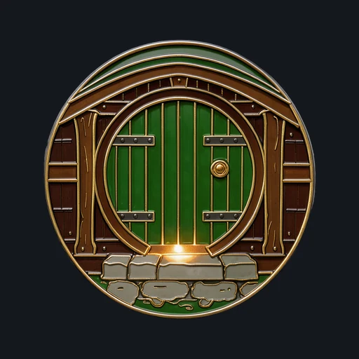
a-1123584.0Full circular face; the round green door, brass knob and stone step read instantly at 96 px, with clean glossy enamel, a thin bright rim and no text or baked frame.

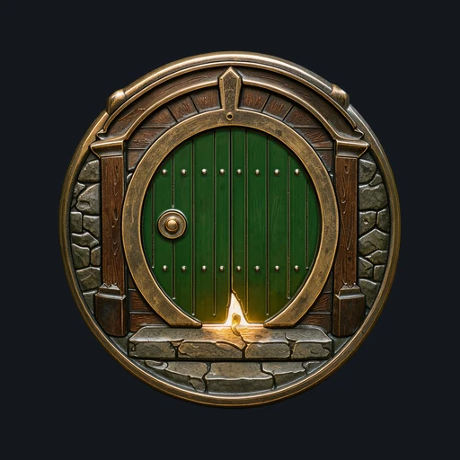
b-1414214.5Aged bronze door face is centred and fully circular; the warm crack glow and stone step stay legible at 96 px, slightly darker than the a variant but artifact-free.
★ RecommendedShortlist note: B has the full door, step and margin with aged metal; A is cropped at the arch and brighter than the habit frame.
Across the Buckleberry Ferry

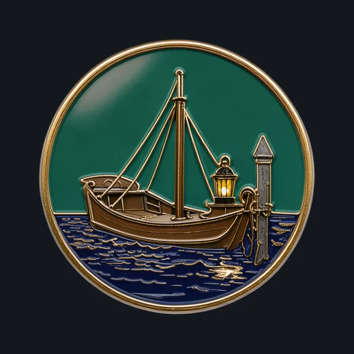
a-2718284.5Full circular green-and-navy ferry badge; hull, single lantern and mooring post read clearly at 96 px, with crisp enamel, a clean gold rim and no text.
★ Recommended
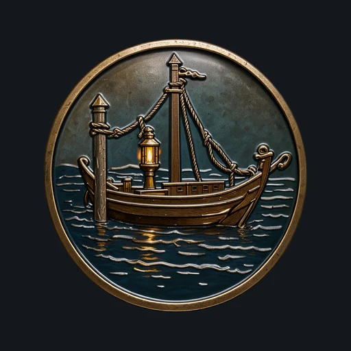
b-1414214.0Aged metal ferry on dark water; the full circle and lantern/hull silhouette remain readable at 96 px, lower contrast than the a variant but clean with no baked border ring.
Shortlist note: b-271828 rejected: baked ornate engraved border ring. b-161803 has a cloud/landscape background; b-141421 is the cleanest aged option.
Survivor of Weathertop

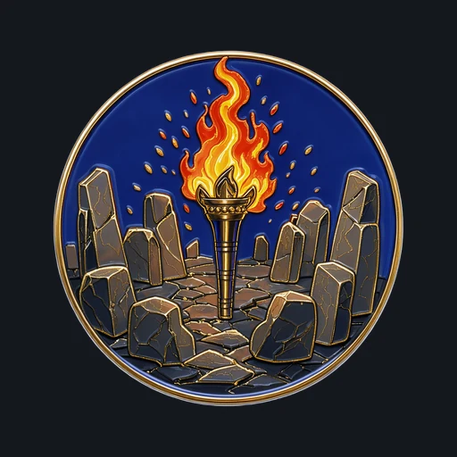
a-1618034.5Full circular torch-and-standing-stones badge; flame, torch shaft and broken stone ring read strongly at 96 px, with clean enamel, a thin rim and no text on the torch rerun.
★ Recommended
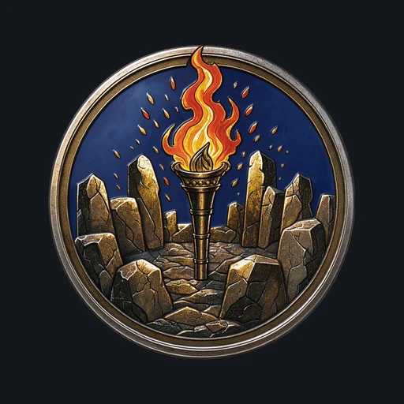
b-1618034.0Aged-metal torch scene, fully circular; flame and stones remain legible at 96 px, darker patina than the a variant but with no text or artifacts.
Shortlist note: a-161803 has the strongest flame silhouette; b-161803 is the best aged alternative.
Through Khazad-dûm

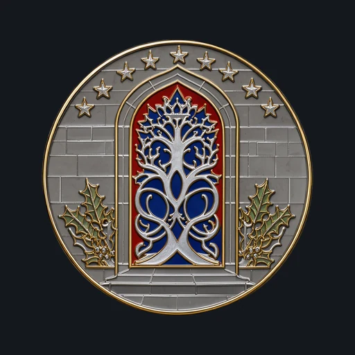
a-2718284.5Full circular arched-door badge; the silver tree, crown and seven stars read at 96 px, with clean grey stone, a blue door and a crisp gold rim, no text.
★ Recommended
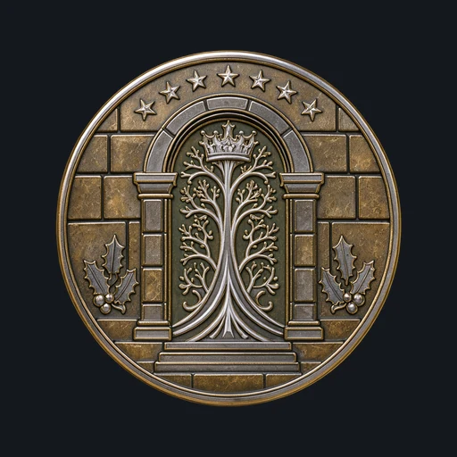
b-1123583.5Aged bronze arched door, fully circular; the tree-and-crown motif reads but the silver tree is low contrast against the grey door; no text or baked frame.
Shortlist note: b-161803 rejected: signature-like squiggle below the step. a-173205 is a clean alternate if a brighter second a variant is preferred.
Guest of the Golden Wood

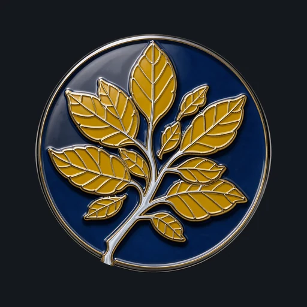
a-3141594.5Full circular navy badge; the gold mallorn leaf cluster on a pale silver branch reads instantly at 96 px, with clean enamel, a thin silver rim and no text.
★ Recommended
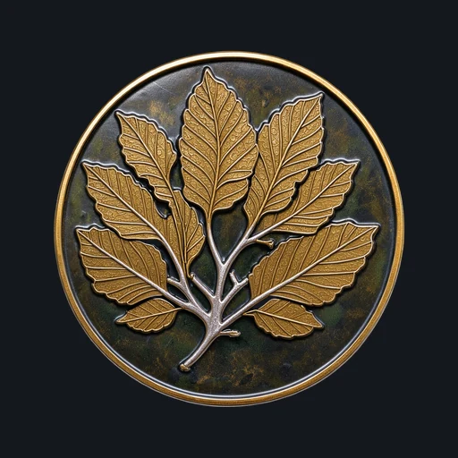
b-1618034.0Aged bronze disc with gold leaves and a pale silver branch; the full circle and leaf silhouette stay clear at 96 px, darker patina but artifact-free.
Shortlist note: a-112358 rejected: broken disc with a transparent bite. a-271828 rejected: loose sprig with no badge face. a-141421 rejected: broken crescent face.
The Breaking of the Fellowship

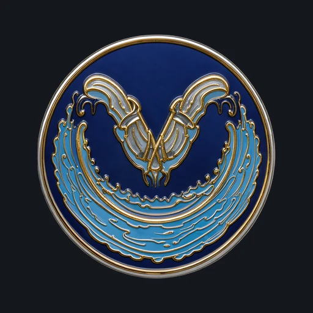
a-1123584.0Full circular blue badge; the cloven horn halves and falling-water crescent read at 96 px, with clean enamel, a gold rim and no text.
★ Recommended
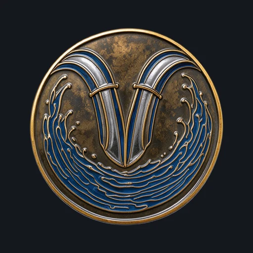
b-1618034.0Aged metal version with larger horn halves and a strong water crescent; fully circular and clean at 96 px, with no text or baked frame.
Shortlist note: Tie 4.0/4.0: A is polished blue, B is aged silver-blue. No set-coherence preference; pick on material.
Standing at Mount Doom

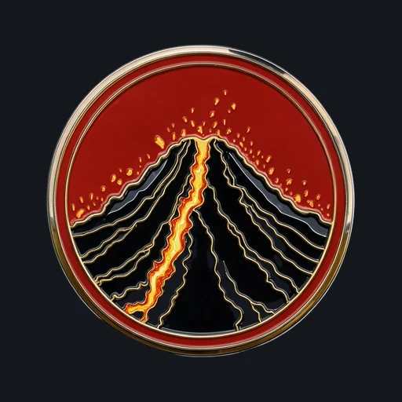
a-1732054.5Full circular red-sky badge; the black volcanic cone and molten fissure read strongly at 96 px, with a clean ember ring, gold rim and no text.
★ Recommended
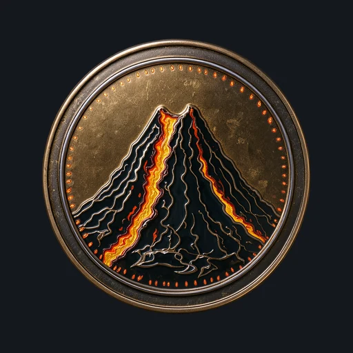
b-3141594.0Aged bronze cone with a molten fissure and ember ring; the full circle and cone silhouette stay strong at 96 px, darker patina but clean and artifact-free.
Shortlist note: a-161803 and b-271828 rejected: broken/non-circular outer face with large transparent gaps. a-112358 is a clean alternate but its dotted ember ring is busier.
Home Again at Sunset

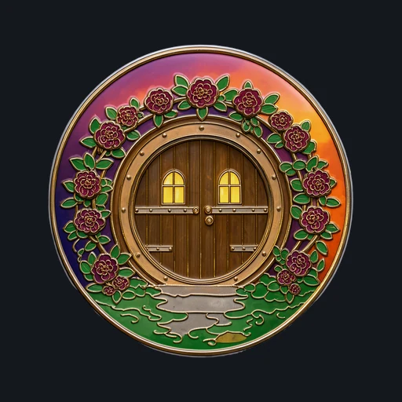
a-1123583.5Full circular sunset badge; the round door, lit windows and rose wreath read at 96 px, with clean enamel, a thin gold rim and no text.

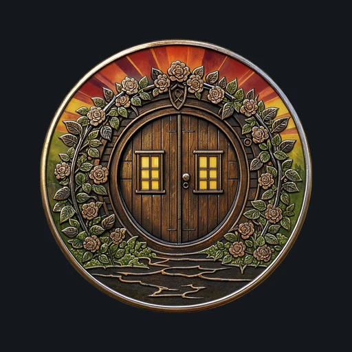
b-1618034.5Aged bronze door with a rose wreath and sunset sky; fully circular and legible at 96 px, darker patina but clean and artifact-free.
★ RecommendedShortlist note: Set-coherence pick: B is aged bronze with an amber/rust sunset and muted roses; A is the pastel magenta outlier.
Faithful Walker

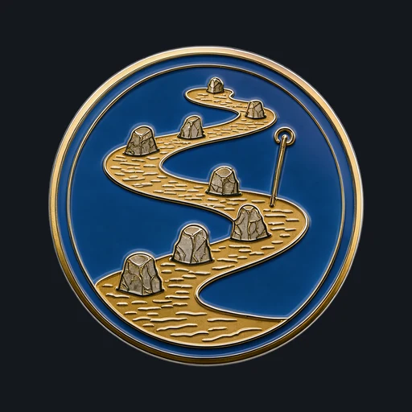
a-1732054.5Full circular blue badge; the winding path, milestone stones and planted staff read at 96 px, with clean enamel, a gold rim and no text.
★ Recommended
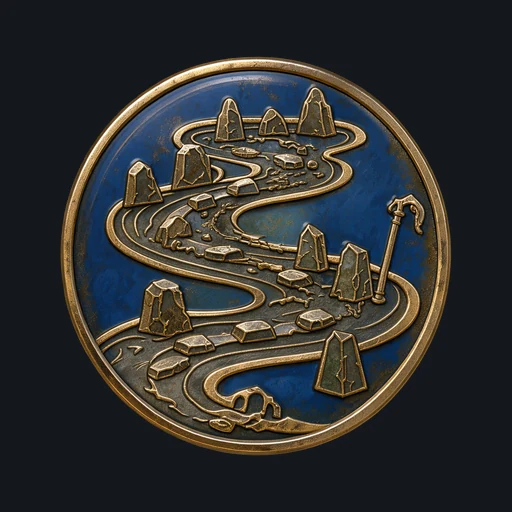
b-1123583.5Aged metal path scene, fully circular; the staff and stones read but the path is low contrast at 96 px; no text or baked frame.
Shortlist note: b-314159 rejected: baked ornate border ring. a-112358 is a clean alternate with a green foreground.
The Glittering Caves

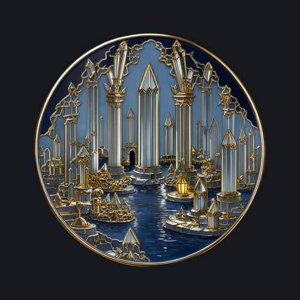
a-2718284.2Wide cavern-city vista with a single warm lantern, fine gold linework and a thin bright rim; the densest of the clean options but still reads as a Dwarf hall at 96 px.

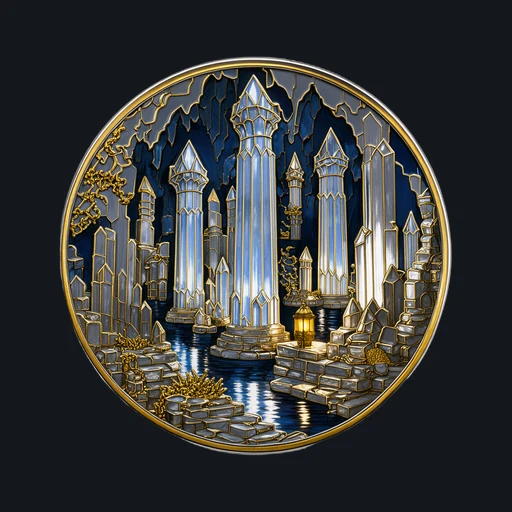
a-1732054.6Thin-rim cave scene with one foreground lantern, a dominant crystal tower and clear water reflections; the cleanest and most legible Glittering Caves composition at 96 px.
★ RecommendedShortlist note: a-173205 is the cleaner small-size read with a single lantern; a-271828 is the wider vista. All b variants rejected for heavy gothic/engraved border rings; a-112358, a-141421, a-314159 and a-161803 rejected for multiple lanterns or overloaded foregrounds.
Weekend Warrior

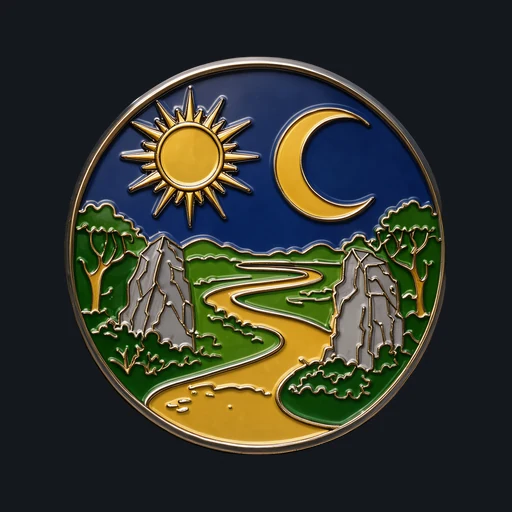
a-1414214.5Polished enamel with a bold sun, crescent moon and S-curved path balanced between the two standing stones; the thin rim and clear colour blocks hold up at 96 px.
★ Recommended
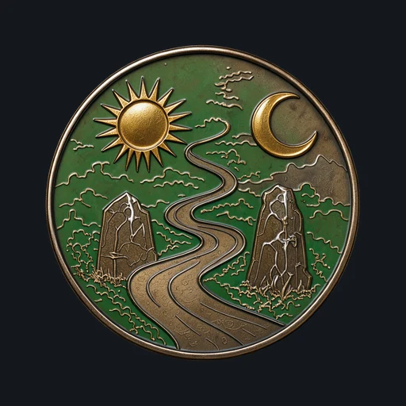
b-2718284.0Aged bronze-and-green take on the same balanced sun/moon/path composition; the muted patina lowers contrast but stays clean and artifact-free.
Shortlist note: a-173205 is a close polished alternate; b-271828 supplies the aged-material counterpart. b-112358 is too dark and b-161803 loses the green field.
Steady Month

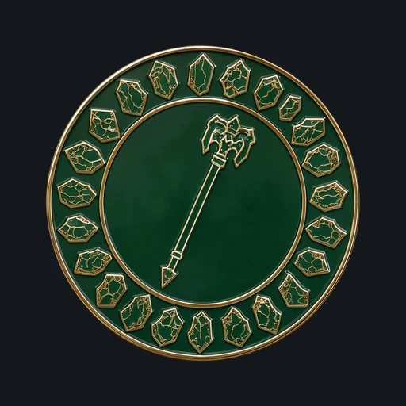
a-2718284.5Even ring of twenty gold-rimmed green stones around a deep green enamel field, with an ornate diagonal staff; the cleanest polished read of the monthly cycle.
★ Recommended
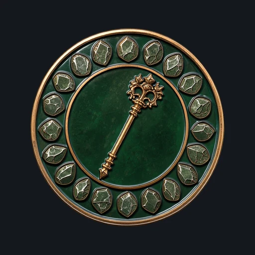
b-1618034.0Aged bronze version keeps the twenty-stone ring and diagonal staff with a classic key head; richer patina and a slightly busier rim than A.
Shortlist note: The central object reads as a key/scepter rather than the intended walking staff in both finalists. a-112358 rejected for crossed twin staffs; b-314159 reads as a clock hand; a-173205 is a close alternate.
Hundred-K Week

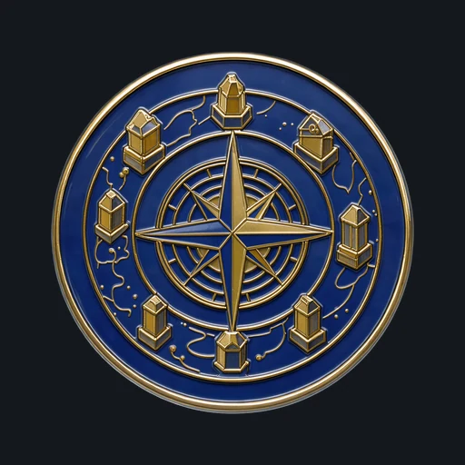
a-1123584.5Polished deep-blue field with a crisp compass rose, concentric orbit rings and eight gold milestone markers; strongest contrast and cleanest 96 px silhouette.
★ Recommended
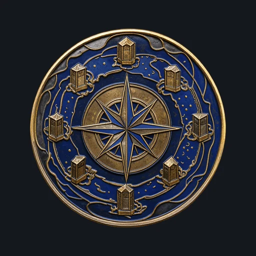
b-1618034.0Aged blue-and-bronze version keeps the compass rose, orbit rings and marker circle; warm patina and slightly softer contrast than A.
Shortlist note: Both read as a compass with an orbit ring, not the prompted spiral, and show eight milestone markers rather than seven. a-173205 is a close polished alternate; b-141421 is the darker aged option.
Fellowship Founder

a-1414214.5Solid blue enamel field sets off the flame-carved central stone and two flankers, with crisp gold outlines and no split-colour flag background.
★ Recommended
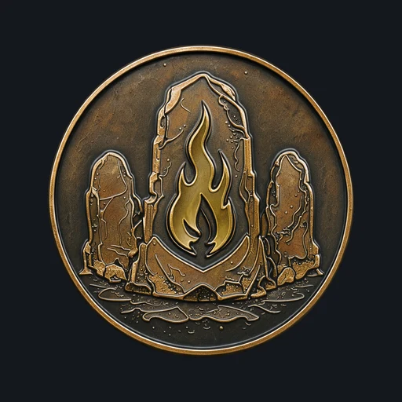
b-2718284.0Full aged-bronze treatment with a ghosted gold flame and chased stone relief; lower contrast than A but the most cohesive aged option.
Shortlist note: a-112358 and a-161803 rejected for split blue/red fields that read as flags; a-173205 loses the flame against a red field. b-161803 is a close aged alternate with a blue field.
Good Company

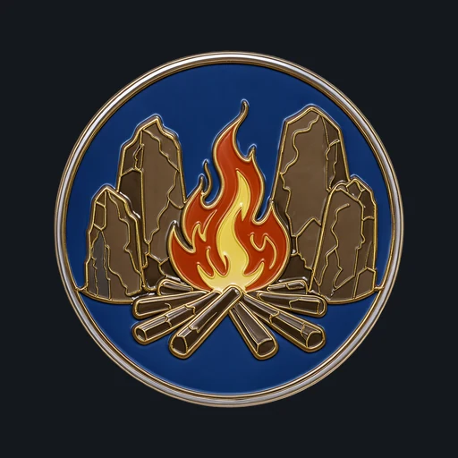
a-1123584.5Deep blue field makes the red-orange campfire and crossed logs pop, with four standing stones and a thin rim; the strongest 96 px read of the set.
★ Recommended
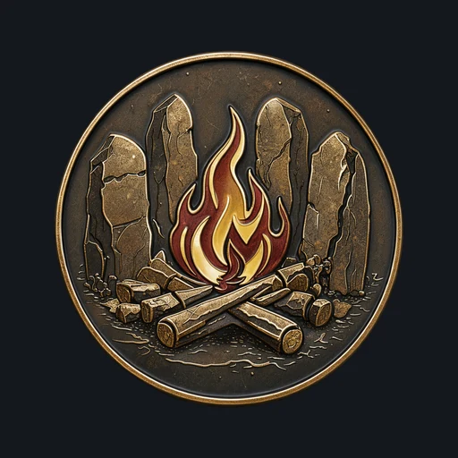
b-2718284.0Aged bronze field with a warm red-gold flame and chunky logs; richer patina and slightly lower contrast, but artifact-free.
Shortlist note: b-161803 is a close aged alternate; a-141421 has heavier outlines and a less crisp flame; a-271828's red field competes with the fire.
Journey Frame

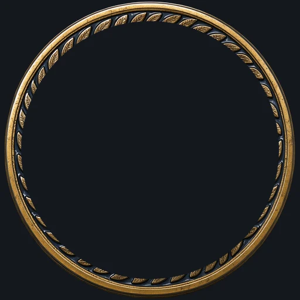
a-2718284.5Hollow laurel-wreath ring with an even gold-and-steel band; the inner opening is clean and centred, with no gap or filled centre.
★ Recommended
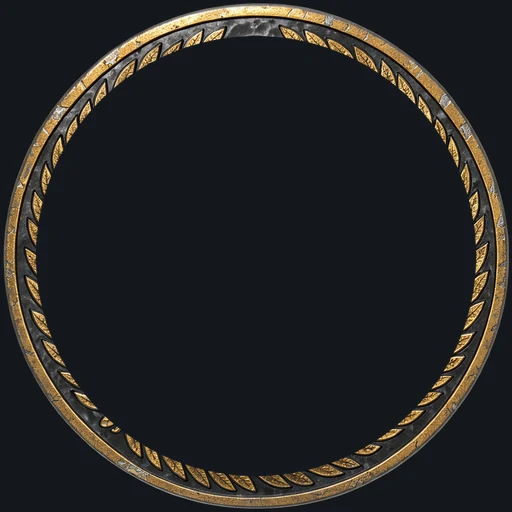
b-1123584.0Aged gold laurel ring, continuous and hollow; the band is even and the opening clean, with a patina that still reads at 96 px.
Habit Frame

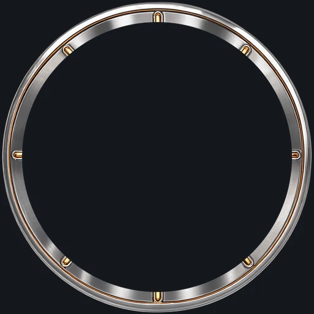
a-1123584.5Hollow brushed-steel ring with seven notches and a thin copper inner line; the band is even and the opening clean, with no gap or filled centre.
★ Recommended
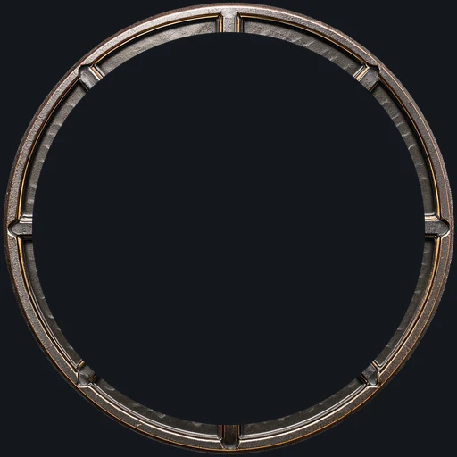
b-3141594.0Aged hammered-steel ring with the same notch rhythm; the band is continuous and the hollow centre clean, with no artifacts.
Challenge Frame

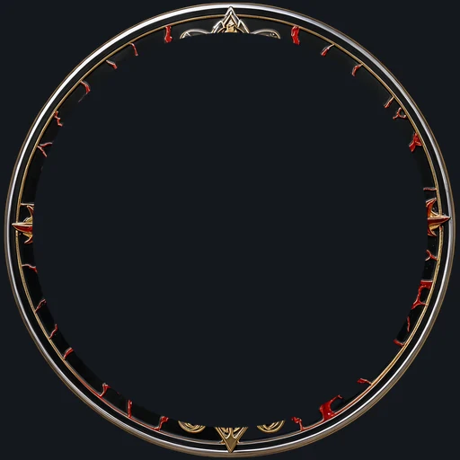
a-1123584.0Hollow black-iron ring with molten red cracks and symmetric gold barbs; the band is continuous and the opening clean, with no text.
★ Recommended
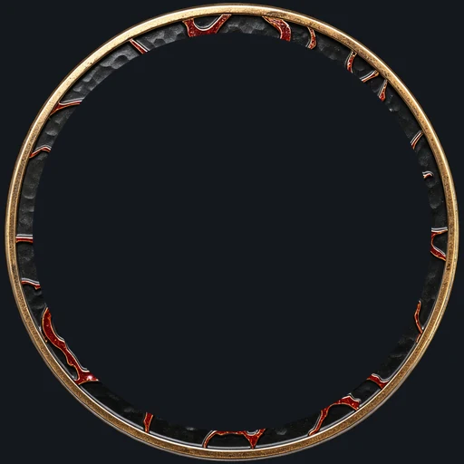
b-1618034.0Aged black-iron ring with red cracks and a gold rim; continuous, hollow and evenly weighted, with a strong 96 px read.
Shortlist note: A has the finer barb motif; B reads stronger at 96 px because its band is broader. Pick on the final frame weight.
Book Frame

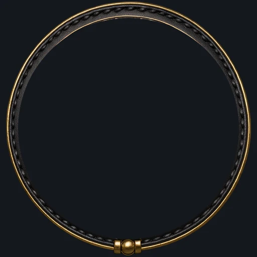
a-2718284.5Hollow leather-and-gold filigree ring with a small centred clasp; the band is even and the opening clean, with no side tabs or filled centre.
★ Recommended
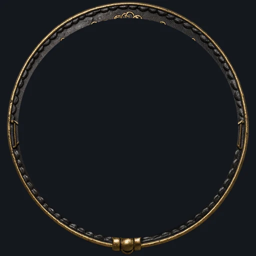
b-2718284.0Aged leather ring with gold filigree and a centred clasp; the hollow band is continuous and clean, with a darker but artifact-free patina.
Shortlist note: Chosen over the side-tab seeds (a-112358, a-161803, b-112358, b-161803), which protrude and shrink the ring.
Community Frame

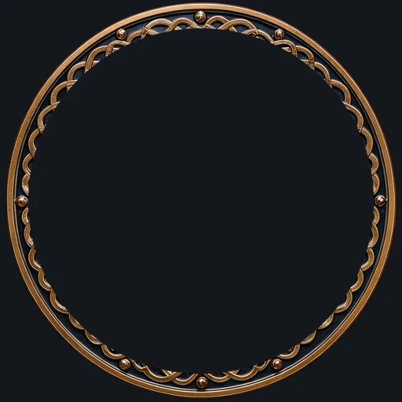
a-3141594.5Hollow bronze knotwork ring; the band is continuous and even with a well-defined opening and a clean 96 px read, no text.
★ Recommended
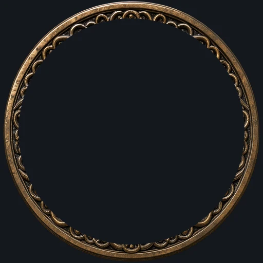
b-2718284.0Aged bronze knotwork with small studs; the hollow band is continuous and the opening clean, with a darker patina but no artifacts.
Field Guide Frame

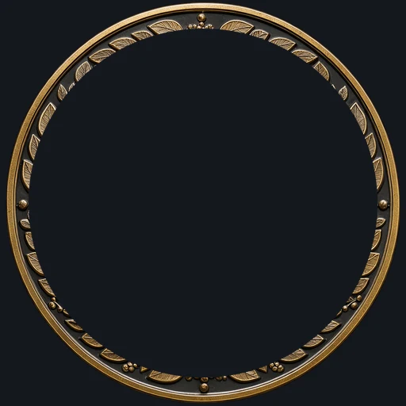
a-3141594.5Hollow aged-brass ring with pressed leaves; the band is even and the opening clean, with no protrusions and a crisp 96 px silhouette.
★ Recommended
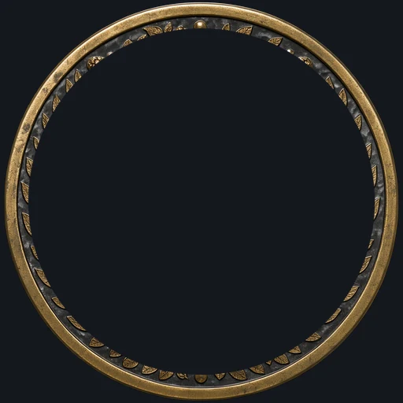
b-2718284.0Aged brass leaf ring with a darker patina; the hollow band is continuous and the opening clean, with no text or filled centre.
Bronze Rank Ring

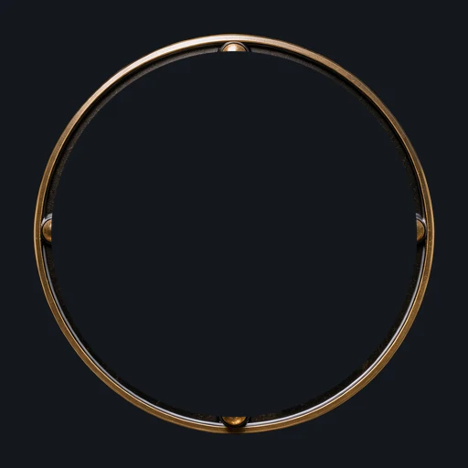
a-3141594.0Thin hollow bronze band with three round studs and a bottom clasp; continuous and evenly weighted, with no gap or filled centre.
★ Recommended
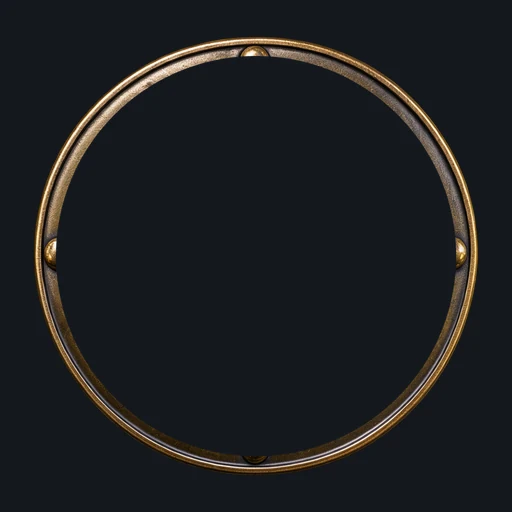
b-1618033.5Aged bronze band with the same three-stud rhythm; continuous and hollow, though the patina lowers contrast at 96 px; no artifacts.
Silver Rank Ring

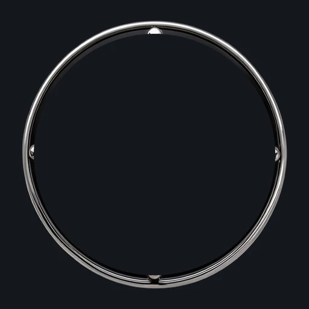
a-1123584.5Bright silver band with four evenly spaced studs; continuous, hollow and crisp at 96 px, with no gap and no text.
★ Recommended
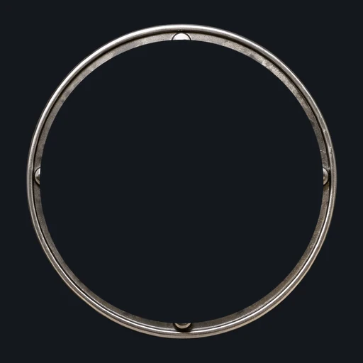
b-1123584.0Aged silver band with four studs; continuous and hollow, with a softer patina but clean, even weighting.
Shortlist note: a-314159 rejected: six studs instead of the specified four.
Gold Rank Ring

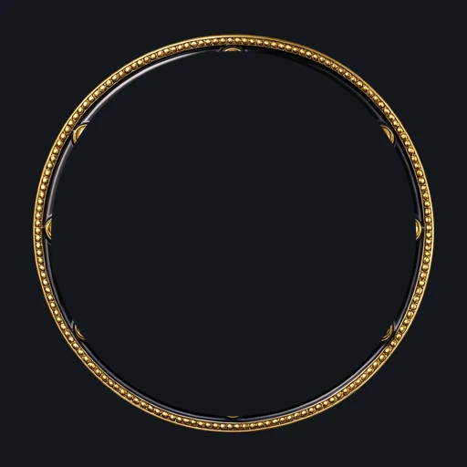
a-1618034.5Deep-gold beaded band with five round studs and a bottom clasp; continuous, hollow and clean at 96 px, with no gap.
★ Recommended
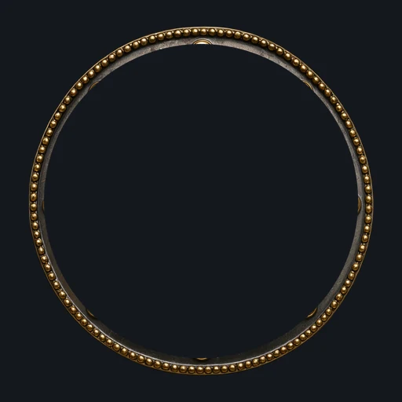
b-2718284.0Aged gold beaded band with five studs; continuous and hollow, with a darker patina but the rank colour still reads.
Shortlist note: a-314159 rejected: visible gap at 12 o'clock. a-112358 has a blue enamel band; b-314159 has a steel inner band.
Mithril Rank Ring

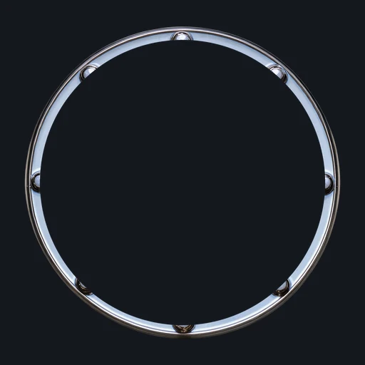
a-3141594.5Pale blue-white mithril band with six evenly spaced studs; continuous, hollow and crisp at 96 px, with no gold contamination.
★ Recommended
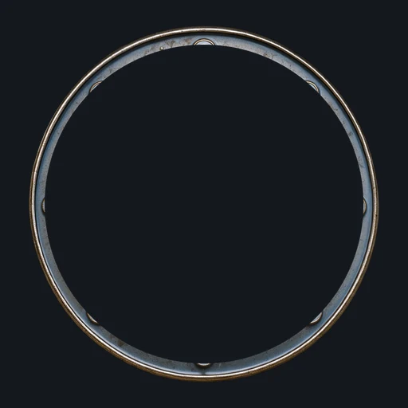
b-2718283.5Aged pale-silver band with six studs; continuous and hollow, though the cool glow is weaker at 96 px; the rank colour is still correct.
Shortlist note: a-271828 and b-314159 rejected: gold/brass rims contradict the mithril set.
Selections
Reply with A or B per achievement, or edit
selections.md. Rank rings are reference only under F1.
| Asset | Finalist A | Finalist B | Recommended | Selection |
|---|---|---|---|---|
| First Steps emblem/habit-first-steps | A a-112358 | B b-141421 | ★ B | Pending |
| Across the Buckleberry Ferry emblem/journey-frodo-sam-buckleberry-ferry | A a-271828 | B b-141421 | ★ A | Pending |
| Survivor of Weathertop emblem/journey-frodo-sam-weathertop-survivor | A a-161803 | B b-161803 | ★ A | Pending |
| Through Khazad-dûm emblem/journey-frodo-sam-through-khazad-dum | A a-271828 | B b-112358 | ★ A | Pending |
| Guest of the Golden Wood emblem/journey-frodo-sam-lothlorien-guest | A a-314159 | B b-161803 | ★ A | Pending |
| The Breaking of the Fellowship emblem/journey-frodo-sam-rauros-parting | A a-112358 | B b-161803 | ★ A | Pending |
| Standing at Mount Doom emblem/journey-frodo-sam-mordor-threshold | A a-173205 | B b-314159 | ★ A | Pending |
| Home Again at Sunset emblem/journey-frodo-sam-home-at-sunset | A a-112358 | B b-161803 | ★ B | Pending |
| Faithful Walker emblem/habit-faithful-walker | A a-173205 | B b-112358 | ★ A | Pending |
| The Glittering Caves emblem/journey-frodo-sam-glittering-caves | A a-271828 | B a-173205 | ★ B | Pending |
| Weekend Warrior emblem/habit-weekend-warrior | A a-141421 | B b-271828 | ★ A | Pending |
| Steady Month emblem/habit-steady-month | A a-271828 | B b-161803 | ★ A | Pending |
| Hundred-K Week emblem/habit-hundred-week | A a-112358 | B b-161803 | ★ A | Pending |
| Fellowship Founder emblem/community-fellowship-founder | A a-141421 | B b-271828 | ★ A | Pending |
| Good Company emblem/community-good-company | A a-112358 | B b-271828 | ★ A | Pending |
| Journey Frame frame/journey | A a-271828 | B b-112358 | ★ A | Pending |
| Habit Frame frame/habit | A a-112358 | B b-314159 | ★ A | Pending |
| Challenge Frame frame/challenge | A a-112358 | B b-161803 | ★ A | Pending |
| Book Frame frame/book | A a-271828 | B b-271828 | ★ A | Pending |
| Community Frame frame/community | A a-314159 | B b-271828 | ★ A | Pending |
| Field Guide Frame frame/field-guide | A a-314159 | B b-271828 | ★ A | Pending |
| Bronze Rank Ring rank/bronze | A a-314159 | B b-161803 | ★ A | Reference only |
| Silver Rank Ring rank/silver | A a-112358 | B b-112358 | ★ A | Reference only |
| Gold Rank Ring rank/gold | A a-161803 | B b-271828 | ★ A | Reference only |
| Mithril Rank Ring rank/mithril | A a-314159 | B b-271828 | ★ A | Reference only |